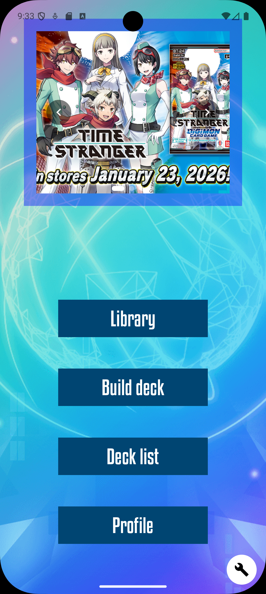
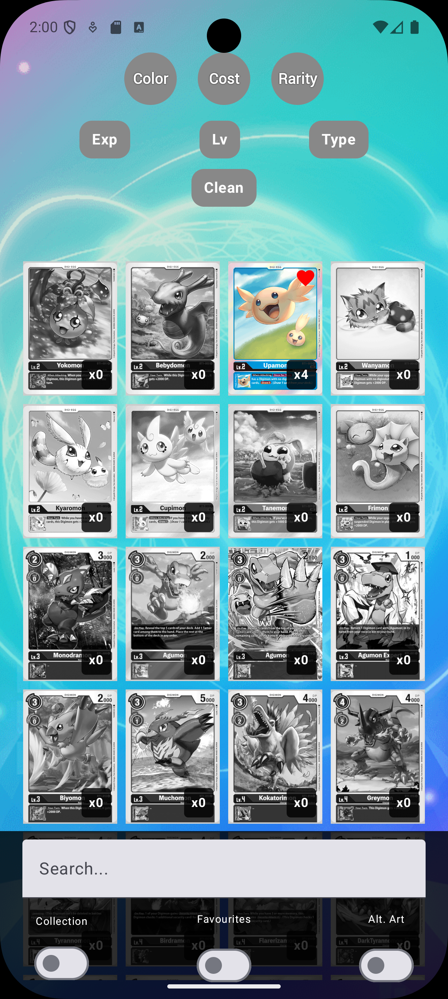
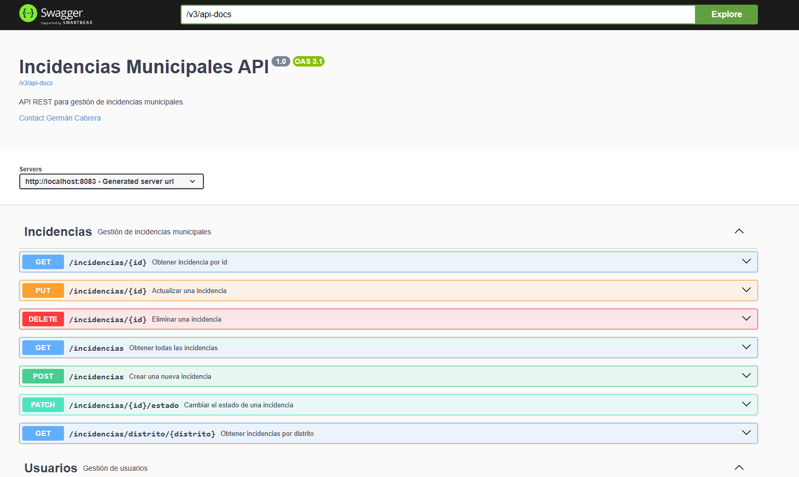

Gestión de Tributos Municipales
API REST en Java/Spring Boot que gestiona contribuyentes, recibos, pagos y el cálculo automático de recargos por impago según la Ley General Tributaria (5% / 10% / 20% + intereses de demora), con un frontend en React que consume la API en tiempo real y simula el importe a pagar antes de confirmar. Backend en Render, base de datos en Neon, frontend en Vercel.
DigitalHub
Aplicación Android para jugadores del TCG de Digimon: biblioteca interactiva de cartas con filtros, creación y gestión de mazos, tier list de arquetipos y perfil de usuario, con autenticación y persistencia real en Firebase. Construida en Kotlin con Jetpack Compose, siguiendo Clean Architecture (data / domain / presentation) y MVVM con casos de uso.


Incidencias API
API REST en Spring Boot para la gestión de incidencias municipales, con caché distribuida en Redis (invalidación automática con @CacheEvict en cada escritura) y publicación de eventos en tiempo real con Apache Kafka cada vez que una incidencia cambia de estado. La máquina de estados vive encapsulada en la propia entidad de dominio, cubierta por tests. Todo el stack (Postgres, Redis, Kafka y la API) se levanta con un único comando de Docker Compose.

docker compose up --build y la documentación interactiva en Swagger.